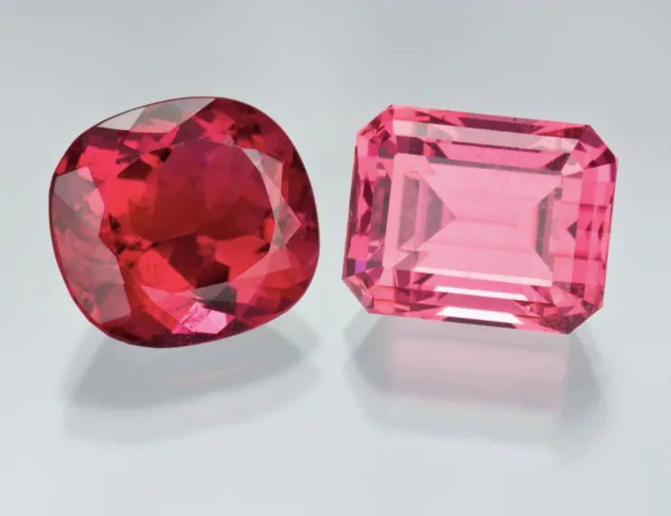

稀有寶石巡禮：坦桑石、丹泉石與沙弗萊
有些寶石「一出土就轟動」——坦桑石、丹泉石與沙弗萊石，是近代寶石界的三大新貴。

核心定義
稀有寶石（rare gemstones）指產量稀少、近現代才被市場認可的寶石：坦桑石（tanzanite，藍紫黝簾石）、丹泉石（tanzanite 同物，亦指藍紫色黝簾石）、沙弗萊石（tsavorite，綠色鈣鋁榴石）。它們的共同點：單一產地、產量極少、顏色驚豔。
坦桑石 1967 年在坦尚尼亞被發現（僅此一處產地）——蒂芙尼（Tiffany & Co.）命名推廣，二十年內身價暴漲；沙弗萊石 1967 年在肯亞/坦尚尼亞發現（鈣鋁榴石的綠色變種）——以國家公園命名，成為綠色寶石新貴。
特徵與分類
| 寶石 | 顏色 | 產地 | 市場 |
|---|---|---|---|
| 坦桑石 | 藍紫、霓虹 | 坦尚尼亞唯一 | 高端 |
| 丹泉石 | 三色性（藍紫黃棕） | 同上 | 高端 |
| 沙弗萊石 | 翠綠 | 肯亞/坦尚尼亞 | 高端 |
坦桑石的「藍紫」是它的簽名：加熱後呈濃豔藍紫（天然多為棕褐）——加熱是市場標準處理（需揭露）。沙弗萊石的翠綠「純淨不帶藍」——與祖母綠（帶藍綠）不同的清新綠。
科學原理
坦桑石的三色性（trichroism）：從不同方向看呈藍、紫、黃棕三色——這是黝簾石的光學特徵（肉眼可見的「變色」）。加熱把黃棕消除、藍紫顯現——加熱坦桑石是市場標準。
沙弗萊石的翠綠：釩與鉻致色（不含鐵的灰暗）——綠得清新明亮。硬度 7–7.5、折射率 1.73——鑑定與祖母綠（折射率 1.57）區分：折射儀一測便知。
鑑定與鑑別方法
- 看三色性：坦桑石藍紫黃棕
- 折射儀：坦桑 1.69、沙弗萊 1.73
- 查處理：坦桑石加熱標準
- 查產地：單一產地敘事
- 證書：種類與處理
市場行情與保養建議
行情：坦桑石價格自發現以來持續上漲（單一產地＋供應有限）——頂級藍紫大克拉每克拉數百美元；沙弗萊石（尤其 3 克拉以上）價格堅挺，是綠色寶石的性價比高端之選。
趨勢：稀有寶石是「收藏新貴」——產地唯一、供應封頂、顏色驚豔——它們滿足了「稀缺＋美」的雙重收藏邏輯。風險是「流行性」——市場熱度可能起伏。
常見誤區
坦桑石是黝簾石（硬度 6.5–7），藍寶石是剛玉（硬度 9）——不同礦物、不同身價。它有自己的美學，不是替代品。
沙弗萊石是石榴石（鈣鋁榴石），祖母綠是綠柱石——折射率不同（1.73 vs 1.57）。它與祖母綠是「綠色的兩個家族」。
冷知識
全球唯一的坦桑石礦在坦尚尼亞梅雷拉尼山（面積僅幾平方公里）——地質學家估計數十年內可能採完。
蒂芙尼命名並推廣坦桑石，加上《鐵達尼號》的「海洋之心」傳說——新貴寶石的崛起，靠品質也靠行銷。
反直覺觀點
你看到的藍紫坦桑石，幾乎都是加熱後的產品——「天然坦桑石」以棕褐為主。漂亮是窯的功勞。
坦桑石產地唯一——供應封頂推高價格；但流行退潮時，單一產地也無法阻止價格回調。稀缺是雙面刃。